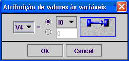
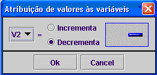

Existem dois tipos de blocos que permitem actuar sobre as variáveis auxiliares
Bloco de atribuição
Este bloco atribui à variável auxiliar:
1-o valor de uma outra variável;
2-um número inteiro

Bloco Incrementa/Decrementa variáveis
Com este bloco podem-se incrementar ou decrementar as variáveis auxiliares. Pode servir, por exemplo, para criar contadores.
